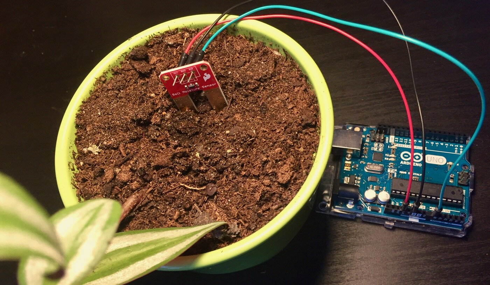

Introduction
Soil moisture refers to the amount of water content present in the soil. It plays a pivotal role in agriculture.ecology, and the overall health of the environment. Understanding and managing soil moisture levels is crucial for various applications, from optimizing crop growth to preserving ecosystems and mitigating the effects of droughts and floods.
How It Works
Soil moisture works by measuring the amount of water present in the soil, providing crucial data for optimizing irrigation, predicting droughts or floods, and sustaining healthy ecosystems..
Demo
Watch a live demonstration of Arduino Uno in action, monitoring soil moisture and making irrigation decisions.
